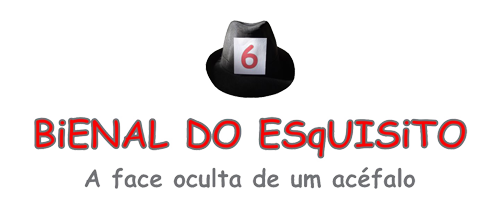

Regulamento

Especificações técnicas:
Regulamento: 6ª Bienal do Esquisito
1- Finalidade:
1.1 - A 6ª Bienal do Esquisito destina-se a reunir e promover as Artes Visuais, propiciando a reflexão visual sobre o mundo atual com o tema: “A face oculta de um acéfalo”. Trata-se de uma abordagem por meio das Artes Visuais sobre a inexistência do óbvio na sociedade, conforme Manifesto feito pelo curador.
1.2 - Pretende expandir a apreciação cultural da Arte Contemporânea para um público de várias faixas etárias.
1.3 - Conferir ao evento a característica de um Festival de Arte inovador.
1.4 - Visa revelar novos talentos, valorizar e incentivar a produção artística autêntica e promover a difusão das Artes.
1.5 - Pretende mostrar os variados campos das Artes Visuais como integradora das Artes, envolvendo atuações de artes plásticas, artes cênicas, música, literatura, dança, vídeo e outras.
2 – Organização:
2.1 - A organização da 6ª Bienal do Esquisito é do Museu Olho Latino em parceria com a Secretaria de Cultura e Eventos da Prefeitura da Estância de Atibaia. A curadoria está a cargo do prof. Dr. Paulo Cheida Sans, representando o Museu Olho Latino.
3 – Comissões julgadoras:
3.1 - Serão compostas duas comissões julgadoras formadas por membros de reconhecida competência, podendo ou não ser os mesmos integrantes nas comissões: a) comissão de seleção; b) comissão de premiação.
4 – Participação:
4.1 - Participarão da 6ª Bienal do Esquisito os artistas convidados pelo curador e os artistas cujas propostas forem selecionadas pelo júri de seleção.
5 – Inscrição e tema:
5.1 - Poderão se inscrever artistas, maiores de 18 anos, com trabalhos originais, de própria autoria, produzidos a partir de 2009, que aborde o tema “A face oculta de um acéfalo” e que já tenham participado de, no mínimo, três mostras ou apresentações.
5.2 - Maiores informações sobre o tema “A face oculta de um acéfalo” está no Manifesto do Curador no site www.olholatino.com.br/6bienaldoesquisito
5.3 - Serão aceitas inscrições individuais e coletivas em todos os campos das Artes Visuais.
5.4 - As obras e participações artísticas devem ser destinadas a um público sem restrição de idade.
5.5 - As inscrições deverão ser feitas, de 02 a 20 de abril de 2012, unicamente pelo site www.olholatino.com.br/6bienaldoesquisito no campo ficha de inscrição. Não serão aceitas inscrições por meio de cartas e ou pessoalmente.
5.6 - A organização do evento não se responsabilizará por possíveis problemas que possam surgir, quanto à falta de energia elétrica e problemas decorrentes ao envio. Pede-se que a inscrição seja feita o quanto antes, evitando-se o acúmulo de inscrições na véspera do encerramento do período determinado.
5.7 - O artista poderá fazer a inscrição na seção A ou B, conforme descrito no item 6.
5.8 - Para realizar a inscrição, o artista deverá preencher os campos no item ficha de inscrição do site www.olholatino.com.br/6bienaldoesquisito e anexar a sua proposta conforme a seção desejada, como descrita nos itens 7 e 8.
6 - Modalidades de Inscrição Seção A e Seção B:
6.1 - A inscrição poderá ser feita em uma das modalidades de participação:
a) Seção A: para envio da(s) obra(s) e realização de performance(s) para ser(em) exposta(s) e ou apresentada(s) no local expositivo do evento.
b) Seção B (Agregados): para realização da(s) obras e performance(s) à distância, sendo exposta(s) ou apresentada(s) em outro local ou cidade. Nesse caso, o artista selecionado enviará o registro fotográfico e ou vídeo para ser(em) exibido(s) em telão ou monitor(es) durante o evento.
7 - Requisitos para se inscrever na Seção A:
Seção A) Inscrição para expor as obra(s) e proposta(s) artística(s) no local da 6ª Bienal do Esquisito, ou seja, no Museu Olho Latino – Centro de Convenções “Victor Brecheret”, na Estância de Atibaia, SP. Tratando-se de performance ou de apresentação em público, o artista selecionado apresentará ao vivo o seu trabalho artístico na abertura da 6ª Bienal do Esquisito.
7.1 - O artista que se inscrever na Seção A deverá apresentar uma proposta de participação, mencionando a obra ou conjunto de obras, vídeo ou performance com que pretende participar, contendo fotos sobre o(s) trabalho(s) e a ficha de inscrição devidamente preenchida online no site www.olholatino.com.br/6bienaldoesquisito
7.2 - A inscrição na Seção A poderá ser em qualquer modalidade das Artes Visuais: pintura; gravura; escultura; desenho; fotografia; objeto; poesia visual; instalação; performance; vídeo-arte; obras digitais; intervenção e outros.
7.3 - O artista poderá se inscrever com um conjunto de obras ou mesmo com uma só obra. A proposta de conjunto poderá ter diversidade técnica ou não, desde que a proposta esteja adequada com as dimensões do espaço disponíveis para cada situação descrita abaixo. Sugere-se que cada artista ocupe, no máximo, o seguinte espaço:
. Obras bidimensionais: 3m (três metros) de largura por 2m (dois metros) de altura.
. Obras tridimensionais: 2m (dois metros) de largura e de profundidade, por 2,5m (dois metros e cinquenta centímetros) de altura.
. Instalações: 4m² (quatro metros quadrados) de área por 2,5m (dois metros e cinquenta centímetros) de altura.
. Obras bidimensionais e tridimensionais que excederem essas especificações poderão ser inscritas no segmento de inscrição para participação à distância (agregados). Ver o item Seção B.
. No caso de performance, vídeo-arte, animação digital ou algum tipo de apresentação em público, pede-se para evitar que a duração exceda 7 minutos de exibição. O artista deverá mencionar na proposta o link em que o vídeo poderá ser visto.
. No caso de arte pública ou intervenção urbana será analisada a viabilidade da proposta.
7.4 - A proposta de participação deverá ser enviada no formato A4 em arquivo DOC (Word) ou PDF e deverá conter:
. Dados pessoais e endereço;
. Explicação sobre a proposta de participação;
. Fotos das obras deverão ser anexadas no formato JPG e na proposta deverá conter as suas respectivas identificações como o título, material utilizado, dimensões e ano de execução, o link sobre o vídeo (se for o caso). Caso o artista tenha um conjunto de fotos poderá fazê-lo também em arquivo de extensão ZIP.
. Instruções para a montagem das obras (se for o caso).
. Currículo resumido;
. Outras informações sobre a produção do artista poderão ser anexadas na proposta de participação, assim como links de textos críticos, catálogos, notícias e exposições realizadas.
7.5 - Não serão aceitas obras realizadas com materiais perecíveis ou adulteráveis que prejudiquem a apresentação de outros trabalhos ou comprometam a integridade física do local, dos funcionários e do público.
8 - Requisitos para se inscrever na Seção B:
Seção B) Inscrição para participação à distância, como artista agregado. Nesse caso, as obras ou as propostas artísticas poderão ser apresentadas em qualquer local e cidade. O artista deverá comprovar sua realização com fotos ou filmagem, que deverão ser enviadas para a 6ª Bienal do Esquisito a fim de que sejam exibidos durante o período do evento.
8.1 - O artista que se inscrever na Seção B deverá apresentar uma proposta, mencionando a(s) obra(s) ou performance, ou outro tipo de trabalho que pretende realizar.
8.2 - A proposta de participação deverá ser enviada no formato A4 em arquivo DOC (Word) ou PDF e deverá conter:
. Dados pessoais e endereço;
. Explicação sobre a proposta da(s) obra(s) ou do trabalho artístico a ser feito à distância para a 6ª Bienal do Esquisito.
. Caso existam fotos que auxiliem a compreensão do trabalho artístico a ser feita à distância, estas deverão ser anexadas no formato JPG e na proposta deverá conter as suas respectivas identificações como o título, material utilizado, dimensões e ano de execução, o link sobre o vídeo (se for o caso). Caso o artista tenha um conjunto de fotos poderá fazê-lo também em arquivo de extensão ZIP.
. Caso não existam fotos, anexar os esboços da ideia a ser realizada;
. Currículo resumido;
. Outras informações sobre a produção do artista poderão ser anexadas na proposta de participação ou mencionados links de textos críticos, catálogos, notícias e exposições realizadas.
8.3 – Na proposta à distância, o artista deverá, ao realizar o seu trabalho artístico, tirar fotos e ou fazer vídeo contendo em algum momento um chapéu (ou boné) com o número seis (o número poderá estar dentro, fora ou próximo do chapéu), que deverão ser colocados perto da obra, da performance ou da cena a ser fotografada ou filmada. No caso de vídeo, pede-se para evitar que a duração exceda 7 minutos de exibição. O artista deverá mencionar na proposta o link em que o vídeo poderá ser visto.
9 - Seleção:
9.1 - A seleção será feita através da análise da proposta de participação e documentação anexadas na inscrição.
9.2 - Todos os artistas selecionados serão comunicados por e-mail após a decisão dos jurados e o resultado da seleção será publicado no site do Museu Olho Latino: www.olholatino.com.br/6bienaldoesquisito
9.3 - Caberá ao artista selecionado na Seção A entregar ou enviar suas obras originais aceitas para a 6ª Bienal do Esquisito de 25 a 28 de abril, até às 17h, no Museu Olho Latino – Centro de Convenções “Victor Brecheret”, na Alameda Prof. Lucas Nogueira Garcêz, 511 – Parque das Águas, Estância de Atibaia, SP - CEP: 12941-650.
9.4 - Caberá ao artista selecionado na Seção A em performance ou outra proposta para ser apresentada ao vivo, apresentá-la na abertura do evento, dia 05 de maio, às 19h, no Museu Olho Latino – Centro de Convenções “Victor Brecheret”, na Alameda Prof. Lucas Nogueira Garcêz, 511 – Parque das Águas, Estância de Atibaia, SP.
9.5 - Caberá ao artista selecionado na Seção B enviar os comprovantes de realização do trabalho aceito (fotos ou vídeo) para a 6ª Bienal do Esquisito até 02 de maio, conforme as informações que receber.
9.6 - Os trabalhos selecionados que necessitem de equipamentos especiais deverão ser fornecidos pelos artistas durante o período do evento, bem como a manutenção dos mesmos.
10 - Premiação:
10.1 - Será distribuído o valor bruto de R$10.000,00 (dez mil reais) a critério da comissão de premiação. Observação: os valores mencionados sofrerão descontos obrigatórios, conforme taxa de dedução do IR.
10.2 – Somente receberão prêmios em dinheiro os artistas indicados que tiverem os dados de identificação, CPF e o número do PIS devidamente válidos.
10.3 - Outros Prêmios poderão ser distribuídos conforme atribuição do júri de premiação.
10.4 - Os Prêmios poderão ser aquisitivos, conforme entendimento entre as partes. Nesse caso, as obras passarão a pertencer ao Acervo Olho Latino.
10.5 - Os artistas convidados não concorrerão a prêmios.
11- Abertura e entrega dos Prêmios:
11.1 - A abertura da 6ª Bienal do Esquisito será em 05 de maio de 2012, às 19h, no Centro de Convenções e Eventos Victor Brecheret, Al. Lucas Nogueira Garcez 511 - Estância de Atibaia, SP.
11.2 - O resultado da premiação será anunciado na abertura do evento. A verba correspondente aos Prêmios será depositada em conta corrente fornecida pelo(a) artista premiado(a). Somente receberão os valores os premiados que fornecer os dados necessários para o pagamento correspondente do imposto de premiação (CPF e PIS).
12 - Disposições Gerais:
12.1 - A participação no evento implica na aprovação automática de que as obras sejam fotografadas e filmadas para veiculação na mídia a fim de divulgar o evento. Todo o material enviado, DVDs, textos, projetos, fotos, e outros, das obras e trabalhos artísticos selecionados poderão ser usados e reproduzidos para a divulgação do evento em qualquer tipo de meio de comunicação.
12.2 – O Museu Olho Latino e a Prefeitura da Estância de Atibaia não se responsabilizam pelo direito autoral das imagens e vídeos enviados pelos inscritos. Qualquer ação que seja movida contra o uso de imagens, sons, etc, será de responsabilidade do artista.
12.3 - A 6ª Bienal do Esquisito poderá ser exposta novamente, total ou parcialmente em outro local e cidade. Nesse caso, a organização entrará em contato com o artista.
12.4 - Todos os artistas selecionados e convidados receberão o certificado de participação.
12.5 - As despesas de envio e retirada das obras ocorrerão por conta do artista. Caso as obras não sejam retiradas pessoalmente após o término do evento no mês de junho de 2012, somente serão devolvidas, mediante o prévio contato do artista pelo e-mail Este endereço de e-mail está protegido contra spambots. Você deve habilitar o JavaScript para visualizá-lo. , para que as mesmas sejam enviadas por transportadora ou Correios, conforme disponibilidade da organização, com frete a ser pago pelo artista.
12.6 - Após junho de 2012, ficará a cargo do Museu Olho Latino decidir sobre o destino das obras que não forem retiradas ou solicitadas para devolução.
12.7 - A Prefeitura da Estância de Atibaia e o Museu Olho Latino terão zelo e cuidado no manuseio das obras, mas não se responsabilizam por eventuais danos que os trabalhos enviados venham a sofrer, cabendo aos artistas segurá-los contra riscos de qualquer natureza, bem como as embalagens que acompanharem os mesmos.
12.8 - A Comissão Organizadora da Bienal rejeitará inscrições que não estejam de acordo com os termos deste regulamento. O ato da inscrição implica automática e plena concordância com as normas deste Regulamento.
12.9 - A Comissão de Seleção e a Comissão de Premiação são soberanas e autônomas nas decisões dos critérios adotados. O resultado do evento será irrecorrível.
12.10 - Os casos omissos serão resolvidos pela comissão organizadora.
Cronograma:
6ª Bienal do Esquisito
Tema: A face oculta de um acéfalo
Inscrições: de 02 a 20 de abril de 2012
Resultado da seleção: a partir de 24 de abril no site www.olholatino.com.br/6bienaldoesquisito
Recepção das obras selecionadas (Seção A): de 25 a 28 de abril até às 17h
Recepção dos comprovantes das obras dos artistas agregados selecionados (Seção B): de 25 de abril a 02 de maio até às 17h
Abertura: 05 de maio, às 19h
Período da mostra: de 05 a 26 de maio de 2012
Local: Museu Olho Latino – Centro de Convenções “Victor Brecheret”
Endereço: Alameda Prof. Lucas Nogueira Garcêz, 511 – Parque das Águas – Estância de Atibaia, SP - CEP: 12941-650.
Contato: Este endereço de e-mail está protegido contra spambots. Você deve habilitar o JavaScript para visualizá-lo.
Regulamento, ficha de inscrição e informações: www.olholatino.com.br/6bienaldoesquisito
Realização: Museu Olho Latino e Secretaria de Cultura e Eventos - Prefeitura da Estância de Atibaia. É um projeto realizado com o apoio do Governo do Estado de São Paulo, Secretaria de Estado da Cultura - Programa de Ação Cultural de 2011.